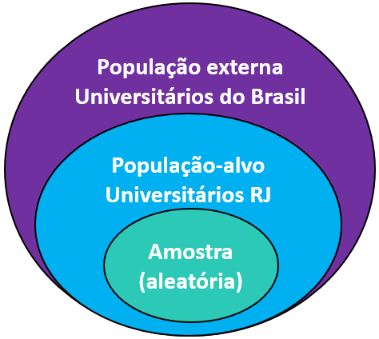
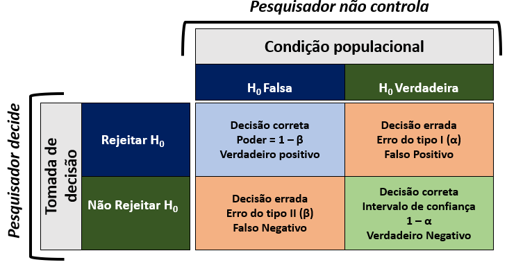
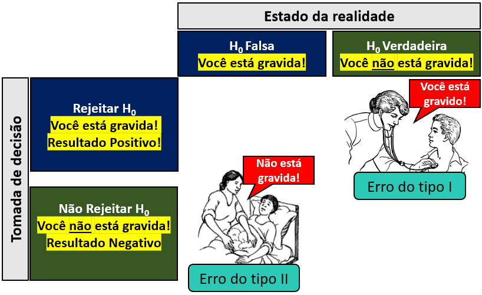

Cap. 7 Estatística Inferencial
Objetivos do capítulo
1. Introduzir diferentes conceitos de estatística inferencial
2. Apresentar os procedimentos feitos durante o Teste de Significância de Hipótese Nula (NHST)
3. Discutir condições particulares sobre valores de P
4. Oferecer leituras complementares sobre os tópicos
Um dos principais objetivos ao se fazer uma pesquisa é conseguir generalizar as descobertas feitas no estudo para toda a população de onde os participantes pertencem Essa tarefa faz parte dos objetivos da estatística inferencial, que se ocupa majoritariamente com desenvolver estimativas sobre os parâmetros populacionais e testar hipóteses.
Como apresentado em outros capítulos, a população pode ser formada por indivíduos, famílias, etc e é frequentemente classificada em “população-alvo” e “população externa.” A população-alvo é formada por aqueles indivíduos não amostrados, mas que o estudo pode generalizar os resultados. A população externa é formada por todos aqueles em que há a intenção de generalizar os resultados, mesmo que apresente características algo distintas dos indivíduos amostrados.
Em uma pesquisa de nosso grupo (Junior et al., 2020), nós contamos com uma amostra aleatória de estudantes universitários de uma universidade do Rio de Janeiro e estudamos algumas de suas características epidemiológicas. Neste caso, a população-alvo poderia ser entendida como todos os estudantes universitários da cidade do Rio de Janeiro, enquanto a população externa poderia ser formada por todos os estudantes universitários do Brasil.

O processo para estimar parâmetros envolve algumas etapas e, apesar de importantes, são quase sempre secundários em Psicologia e muitas áreas científicas. Na grande maioria dos casos, Psicólogos e outros profissionais de áreas científicas fazem uma pesquisa visando testar hipóteses sobre seu objeto de investigação. Dessa forma, como testes de hipóteses figuram como os principais protagonistas da estatística inferencial, eles terão também destaque neste capítulo.
7.1 NHST (Teste de Significância de Hipótese Nula)
GLOSSÁRIO
Parâmetro: Valor que descreve uma característica da população. Esse valor é fixo e desconhecido. Sua representação é feita por letras gregas.
Estatística: Valor que descreve uma característica da amostra. Esse valor é aleatório e calculado através dos dados coletados. É apresentado por letras romanas.
Inferência: Processo pelo qual, através de modelos estatísticos, se tiram conclusões sobre características da população a partir dos dados amostrais e permite fazer generalizações e previsões a respeito da população. Técnicas inferenciais permitem a estimativa dos parâmetros populacionais e testar hipóteses.
Modelo estatístico: Sistema de equações que descreve ou representa o possível processo gerador de dados do conjunto de dados em análise.
NHST: Sigla que representa Teste de Significância de Hipótese Nula (em Inglês, Null Hypothesis Significance Testing)
Atenção: É extremamente difícil conseguir falar sobre este conceito em uma linguagem simples para todos, mas ao mesmo tempo sem inconsistências estatísticas. Algumas notas são deixadas durante a seção visando atingir este objetivo.
A sigla NHST se refere ao Teste de Significância de Hipótese Nula, que é o procedimento mais utilizado quando pesquisadores desejam testar hipóteses de pesquisa utilizando recursos da estatística. Subjacente a todo o processo, está o pressuposto de que é possível transformar perguntas científicas em modelos probabilísticos e, com isso, utilizar a linguagem estatística para lidar com tais questões (Curley, 2013).

Existem diferentes maneiras de introduzir o tema e as subseções a seguir o apresentará descrevendo cada um dos termos que compõe a sigla por uma forma pragmática. Com algumas sutis diferenças, esses procedimentos e suas interpretações são similares em todas as áreas da teoria de decisão, tal como Teoria de Detecção de Sinal e diagnóstico médico, o que foi discutido por um trabalho meu recente.
Algo colateral ao aspecto pragmático, a forma pela qual os testes de hipóteses são feitos hoje é uma mistura entre a forma pela qual Ronald Fisher pensava ser a correta e a maneira pela qual Jerzy Neyman e Egon Pearson defendiam ser a adequada.
7.1.1 A primeira etapa: a hipótese
Na maioria das vezes, quando uma pesquisa é feita, ela visa testar uma hipótese. Por sua vez, uma hipótese é uma conjectura, uma suposição sobre o estado das coisas feita pelo pesquisador e usualmente pensada no presente do indicativo (ex: há) ou no futuro do pretérito (ex: haveria). Em inglês, há o habito de tratar uma hipótese de pesquisa como Educated Guess, tendo em vista que ela costuma ser feita de maneira cuidadosa e após alguma reflexão sobre o tema de interesse. As hipóteses podem ser classificadas como substantivas ou estatísticas.
Uma hipótese substantiva é uma formulação textual e semântica sobre determinado fenômeno. Ou seja, é uma frase, tal como “haveria uma relação entre nível de atividade física e bem-estar psicológico,” ou “o tratamento psicofarmacológico melhora quadros de depressão” ou ainda que “o tipo de colégio - público ou privado - influência nos resultados de alunos em provas nacionais.” A hipótese estatística, por sua vez, visa operacionalizar a hipótese substantiva e, com isso, é uma afirmação conjectural, em termos quantitativos, das relações estatísticas da hipótese substantiva (p. 46), o que será apresentado em seguida.

Ao se fazer uma pesquisa, as hipóteses estatísticas podem ser divididas em Hipótese nula, representada por \(H_0\) e Hipótese alternativa, representada por \(H_1\) ou \(H_a\).
Muitas pesquisas podem ser feitas e, consequentemente, muitas hipóteses construídas. Em Psicologia, quase sempre as hipóteses de interesse verificam diferenças entre grupos ou relacionamento entre variáveis e, por sua frequência na literatura, serão apresentadas aqui.
Em pesquisas com esta finalidade, a hipótese nula é a mais conservadora sobre determinado fenômeno. Ela advoga que pela ausência de padrões, pela inexistência de um relacionamento de causa e efeito, de associação entre variáveis ou de diferença entre grupos. Em termo gerais, a hipótese nula define que qualquer condição observada na população/natureza pode ser melhor explicada pelo acaso.
Por contraste, a hipótese alternativa apoia relação de causalidade entre variáveis, ou que determinado fator apresenta relacionamento com outro ou que existe diferenças entre grupos, etc. Em linhas gerais, a hipótese nula costuma ser definida como aquilo que o pesquisador não acredita (em inglês, chama-se de Straw person Principle) e a hipótese alternativa tende a ser a hipótese que o pesquisador previamente assumiu para motivar sua coleta de dados.
Em estatística frequentista, por um apoio epistemológico, a hipótese nula é assumida como verdadeira antes mesmo de qualquer procedimento de coleta e análise de dados. Note que ao assumi-la como verdadeira, isso não significa afirmar que ela seja, de fato, verdadeira. Essa suposição tem origem em discussões clássicas em estatística e, pragmaticamente, a hipótese nula é o que pesquisadores desejam falsear ou refutar na maioria das vezes em suas investigações (Lecoutre & Poitevineau, 2014).
Apesar da definição textual da hipótese ser de fácil entendimento para todos, ele não tem utilidade para etapa de coleta de dados. Dessa forma, esse formato textual é substituído pelo formato estatístico. Por exemplo, se uma determinada pesquisa é feita sob hipótese de que “um determinado antidepressivo auxilia na melhora de pacientes deprimidos,” isso tende a gerar a hipótese alternativa que pode ser lida como: “em média, pessoas deprimidas do grupo que usou o medicamento tem resultados mais baixos em uma escala de depressão quando contrastado com o grupo que não usou o medicamento.” Conceitualmente:
\[\underbrace{O \,grupo \,que \,tomou \,antidepressivo \,terá \,menos \,depressão}_\text{Hipótese substantiva}\]
\[H_0: \mu_{grupo (1)} = \mu_{grupo (2)} \\ \underbrace{H_a: \mu_{grupo (1)} < \mu_{grupo (2)}}_\text{Hipóteses estatísticas}\]
Neste tipo de formulação estatística, a hipótese nula necessariamente será formada pelo sinal de igual (\(=\)), enquanto a hipótese alternativa poderá ser diferente (\(\neq\)), maior (\(>\)) ou menor (\(<\)). Tecnicamente, isso costuma alterar levemente etapas analíticas, que são descritas em outros capítulos.
É importante introjetar duas condições. A primeira é que o pesquisador não testa diretamente a hipótese substantiva, mas sim a hipótese estatística, que tenta operacionalizar a primeira. A segunda característica é que, em estatística frequentista, por mais importante que seja a hipótese alternativa – afinal, foi ela que motivou a pesquisa – ela não é testada diretamente De fato, se assume que a hipótese nula seja verdadeira por princípio e, em seguida, compara-se o quão compatível os resultados obtidos são à tal hipótese.
Atenção: O pesquisador tende a fazer uma pesquisa para verificar a adequação de sua hipótese (\(H_a\)). Entretanto, o mecânica da estatística frequentista testa o quão os resultados são compatíveis ou não com a hipótese nula.
Com tais explicações feitas, a primeira parte da sigla “NH” (de Null Hypothesis Significance Testing) foi apresentada.
7.2 Nível de significância
Toda pesquisa tem erros. Como visto anteriormente, em estatística frequentista, a hipótese nula é definida como verdadeira inicialmente. Dessa maneira, o nível de significância (denotado pela letra \(\alpha\)) é definido como o máximo erro tolerável (Greenland, 2019) da probabilidade de se rejeitar a hipótese nula quando ela é, de fato, verdadeira. Ele deve ser estipulado antes da coleta e análise de dados e, por ser uma probabilidade, compreende valores entre 0 e 1.
Apesar deste nível ser uma escolha do pesquisador, quanto maior ele for, mais facilmente a hipótese nula será rejeitada. No extremo, se o nível de significância for 1, todos os resultados irão concluir pela rejeição da hipótese nula. Por oposição, se o nível de significância for igual a 0, a hipótese nula jamais seria rejeitada, mesmo quando falsa.
Em estatística frequentista, é convencional estipular o nível de significância em 5% (0.05) ou 1% (0.01). Em algumas ocasiões, 10% (0.1) como nível de significância é aceito, mesmo que isso possa gerar uma maior dificuldade na publicação. Apesar desses números não serem mágicos, a origem dos 5% remonta a Ronald Fisher, que no trabalho “Statistical Methods for Research Workers” (1925), deixou uma tabela com indicando quais seriam os resultados esperados tendo como critério este nível.
O nível de significância é importante pois ele é associado com o conceito de erros. Quando se rejeita uma hipótese nula verdadeira, dá-se o nome de erro do tipo I. Em pesquisas médicas, esse é erro é chamado de “falso positivo” e, em psicofísica, de “falso alarme.”
Entende-se também que é possível que a hipótese nula não seja rejeitada mesmo quando ela é falsa. Esse é o erro do tipo II (2), que também é chamado de “falso negativo” em pesquisas médicas ou “perda” em psicofísica. Note que o erro do tipo 2 e alguns conceitos derivados não se conectam tão diretamente com o conceito de nível de significância. Isso ocorre pois esse conceito não é bem uma defesa de Ronald Fisher, mas foi introjetado posteriormente por Jerzy Neyman e Egon Pearson (B. Cohen, 2013).
A tabela de tomada de decisão a seguir, uma matriz de confusão, é a mais tradicionalmente usada para ilustrar esse conceito.
 Nota: Ronald Fisher tinha bastante resistência à ideia do erro do tipo II ou também aos intervalos de confiança. Essa tabela é uma junção pragmática de sua forma de entender testes de hipóteses e da forma de Jerzy Neyman e Egan Pearson. A hipótese nula é assumida como verdadeira e não provada ou refutada como tal.
Existe um trade-off, ou relação de perde-ganha, entre o erro do tipo I e o erro do tipo II. Aumentar o erro do tipo I leva à diminuição do erro do tipo II. Desta forma, o pesquisador deverá pesar as consequências do erro do tipo I (falsos positivos) e também as consequências do erro do tipo II (falsos negativos) durante a testagem de hipótese.
Ao fim desta seção, outro exemplo será dado para tornar esta tabela mais palatável. Com isto posto, a terceira parte da sigla “S” é considerada apresentada.
7.3 O teste estatístico
A testagem estatística pode ser entendida como uma maneira formal de modelar os dados e verificar a probabilidade de se obter determinados resultados assumindo a hipótese nula como verdadeira. De maneira mais direta, é uma ferramenta de auxílio para contrastar hipóteses, permitindo rejeitar ou não a hipótese nula, a partir de um nível de significância fixo previamente definido (Lecoutre & Poitevineau, 2014). Com isso, ao se implementar testes estatísticos, se possibilita ter inferências sobre aspectos populacionais a partir dos resultados amostrais.
Pragmaticamente, após a definição da hipótese nula e alternativa, bem como o nível de significância, testes estatísticos são calculados com base nos dados e seus resultados auxiliam a rejeitar ou falhar em rejeitar a hipótese nula. A estatística dispõe de um exército de testes estatísticos (ex: Teste T, Teste de Kruskal-Walis, etc), que tendem a ser classificados por muitos critérios, como o tipo de distribuição de algumas variáveis ou a natureza da VI/VD, etc.
Apesar dessa estratégia ser costumeiramente feita não apenas em Psicologia, ela pode levar à falsa percepção de que os testes estatísticos são mutuamente exclusivos e que há uma fórmula de bolo padronizada em que cada situação de pesquisa necessita de um teste específico e não outro.
Neste livro, mesmo nos capítulos em que testes estatísticos são descritos, essas condições serão um pouco desafiadas. O que é fundamental ter conhecimento é que:
- Todo teste estatístico assume alguns pressupostos, que devem ser sempre testados;
- Os testes produzirão um valor numérico, que é um sumário estatístico chamado de estatística de teste, representado por letras como T ou \(\chi^2\);
- Esta estatística de teste é uma variável aleatória com algumas propriedades específicas;
- Apesar da importância destes resultados, eles são sempre transformados em um valor de P. Por sua vez,
- O valor de P é usado como critério de tomada de decisão.
7.4 O valor de P
Após definir da hipótese nula e alternativa, bem como o nível de significância e execução do teste estatístico, um valor de P será apresentado. Ele é o critério mais comumente empregado para tomada de decisão em estatística frequentista e apresenta as seguintes condições:
- Seu valor é uma probabilidade e, portanto, compreende valores entre 0 e 1;
- Seu valor é obtido por um modelo estatístico que é assumido como adequado e bem especificado;
- Seu valor indica a probabilidade de se obter uma estatística de teste igual ou ainda mais extrema que observada assumindo a hipótese nula como verdadeira;
- Seu valor indica a compatibilidade dos resultados obtidos e os esperados assumindo a hipótese nula verdadeira;
- Quando o valor de P é baixo, isso possibilita que o pesquisador conclua pela rejeição da hipótese nula;
- Quando o valor de P é alto, isso impede que a hipótese nula seja rejeitada.
Como valores baixos ou altos são relativos, em estatística frequentista, se considera que a rejeição da hipótese nula ocorre apenas quando o valor de p é menor do que o valor previamente estipulado no nível de significância. Neste sentido, a tomada de decisão segue uma regra discreta, que é:
\[P<\alpha \Rightarrow \ Rejeitar \, H_0 \\P \geq \alpha \Rightarrow \ Falhar \,em \,Rejeitar \]
É importante notar que rejeitar \(H_0\) não significa aceitar \(H_a\). Esse erro é frequente e é chamado de Modus Tolens (Trafimow, 2019). Repare que neste procedimento sequer há a necessidade de \(H_a\). Além disso, os valores de P se referem às estatísticas de teste obtidas durante etapas analíticas. Eles não se referem à teoria científica que motivou a pesquisa e, desta forma, rejeitar \(H_0\) também não significa falar que uma teoria foi provada.
Finalmente, falhar em rejeitar \(H_0\) não prova que ela é verdadeira. É possível apenas concluir que ainda não existem evidências sólidas para rejeitá-la. Aceitá-la significa cair num erro chamado de Argumentum ad Ignorantiam, em que as pessoas tendem a achar que algo que não foi provado como falso é, consequentemente, algo verdadeiro.
Com isso, a última letra “T” de NHST, foi descrita.
7.5 O tamanho do efeito
Os valores de P são importantes como uma medida de força de evidência contra a hipótese nula, bem como permitem que os parâmetros (populacionais) sejam estimados pelos resultados amostrais. Por estas características, eles são importantes em testes de hipóteses e devem sempre ser relatados. No entanto, pragmaticamente, seus resultados são discretos (sim ou não) e não respondem diretamente as questões ou hipóteses que motivaram a execução da pesquisa, apesar de auxiliarem na tomada de decisão (Goodman, 1999).
Medidas chamadas de Tamanho do efeito foram mais recentemente desenvolvidas tentando oferecer um indicador contínuo que visam responder a magnitude, relevância ou importância dos resultados, especialmente, quando se investiga diferenças entre dois grupos.
Em todas as pesquisas amostrais, apenas uma parte da população foi acessada. Neste sentido, como parte da população não foi investigada, qualquer processo de generalização dos resultados pode incorrer em erros inferenciais. Uma vez que a estatística assume que a hipótese nula é, a priori, verdadeira, o erro que primeiro pode aparecer no processo de inferência ocorre quando o pesquisador rejeita a hipótese nula de maneira incorreta. Como a hipótese nula tende a apoiar, por exemplo, que não há diferença entre grupos, ao rejeitar incorretamente
7.6 Um exemplo intuitivo
Muitas áreas que trabalham com a noção de incerteza e erro fazem uso de recursos da Teoria da Decisão. A Teoria da Decisão é uma área interdisciplinar que visa descrever e explicar os processos subjacentes à escolha, com larga aplicação em testes de hipótese, detecção de sinal, exames médicos e avaliação psicológica.
Dessa maneira, apesar de pequenas modificações de simbologia e nomenclatura, a tabela de tomada de decisão apresentada anteriormente costuma se repetir em todas essas áreas para a mesma finalidade: equacionar os custos dos erros e acertos possíveis.
Isso posto, exames médicos talvez representem a melhor forma de entender este processo de tomada de decisão. Imagine que duas pessoas resolvam fazer exame para verificar se estão ou não grávidas. O resultado do exame tem uma grande importância, já que ele servirá de evidência para que ambas as pessoas planejem suas vidas daqui para frente.
Apesar de assumirmos intuitivamente que exames médicos, no geral, são muito acurados, é importante introjetarmos que eles podem apresentar resultados incorretos ou distorcidos. Isso acontece, pois estes exames não medem diretamente o fenômeno de interesse, mas apenas sinais mais ou menos específicos de determinada condição. No caso da gravidez, esses exames costumam verificar o nível do Beta HCG, que atua como um marcador bioquímico importante relacionado à gravidez e algumas outras condições.
É possível aproximar este exemplo pedagógico às hipóteses estatísticas descritas. Repare que na realidade, é possível estar ou não gravida. No entanto, na modelagem estatística, se assume inicialmente que a hipótese nula é verdadeira. Neste sentido, uma vez que a hipótese nula apoia a inexistência de padrões, sinais, eventos (etc), não estar grávida é a hipótese definida como verdadeira preliminarmente.
O resultado do exame pode indicar que a pessoa está gravida ou que não está grávida. No jargão metrológico, esses resultados são chamados de “Positivo” e “Negativo,” respectivamente. Conectando este elemento com a modelagem estatística, se o exame concluir que a pessoa está gravida, isso significa que ele rejeitou a hipótese nula. Em outras palavras, resultados positivos neste exemplo são resultados que rejeitam a hipótese nula. Por oposição, se o exame concluir que a pessoa não está grávida, ele teve um resultado negativo. Pela modelagem estatística, esse tipo de resultado falhou em rejeitar a hipótese nula.

7.7 O que não te contaram sobre inferência estatística
Conforme previamente exposto, introduzir o conceito de teste de significância de hipótese nula em uma linguagem que seja estatisticamente correta e, ao mesmo tempo, facilmente capturável por todos é uma tarefa que parece já nascer fracassada. Há farta literatura indicando isso. Cerca de 90% dos principais livros-texto em Psicologia apresentam conceitos equivocados sobre teste de hipóteses (Cassidy et al., 2019), o que também é frequente em escolas médicas [Ocaña-Riola (2016); Greenwood2015] e uma das justificativas da dificuldade em reproduzir ou replicar resultados previamente publicados (Motulsky, 2014).
É provável que tais entraves quase universais e já bem enraizados na docência de estatística aplicada ocorram também em outras áreas e, provavelmente, uma revisão crítica deste próprio texto tal como está apontaria limitações ou inadequações. Tendo essa condição como base, a listagem de tópicos a seguir visa, ao menos, reduzir que algumas inconsistências sobre testes de hipóteses sejam mantidas ou reforçadas.
Condições metodológicas
De acordo com a teoria Popperiana, uma teoria ou hipótese jamais podem ser provadas. Só é possível gerar evidências que a corroborem provisoriamente ou a rejeitem. Como diz Einstein “No amount of experimentation can ever prove me right, but a single experiment can prove me wrong.” Assim, nenhum resultado obtido em pesquisas deve ser visto como uma prova cabal ou perfeita de uma teoria.
A hipótese nula não necessariamente é zero. É possível que ela defina outros valores. O termo Nil é usado para expressar \(H_0\) quando ela é zero.
O valor de P não pressupõe hipótese alternativa. Ele é uma medida de quão compatível são os dados assumindo a hipótese nula como verdadeira.
A maioria dos testes inferenciais nada mais são do que modelos de regressão. As chamadas variações ou alternativas não-paramétricas tendem a ser modelos de regressão em dados ordenados.
O valor de P depende exclusivamente da hipótese nula e pode ser representado tanto em sentido possibilístico ou, com restrições e muitas discussões acadêmicas, como uma probabilidade condicional.
É necessário sempre checar os pressupostos dos modelos testados. Como diz Isaac Asimov, “Your assumptions are your windows on the world. Scrub them off every once in a while, or the light won’t come in.”
Tem pouco ou nenhum sentido verificar a normalidade da variável dependente antes de performar um teste estatístico. A grande maioria dos testes estatísticos são versões reduzidas de modelos lineares. Assim, testar a normalidade da variável dependente não é um pressuposto de Teste T ou ANOVA. A normalidade desses modelos estatísticos é assumida para os resíduos.
O Teorema Central do Limite e a Lei dos Grandes Números são fundamentais na teoria da inferência, mesmo que não tenham sido abordados diretamente aqui.
Técnicas de bootstrapping e estatística robusta lidam bem com a violação de alguns pressupostos.
Teste paramétrico não significa que a distribuição é normal, mas apenas que são caracterizados por uma família de distribuições indexada por um parâmetro. Nestes testes, o formato da distribuição dos dados é importante e eles visam estimar parâmetros (populacionais). O modelo exponencial ou de Poisson, por exemplo, são paramétrico.
Testes não-paramétrico são melhores descritos como livres de distribuição, já que a distribuição dos dados não é uma preocupação de análise.
Condições históricas
- A proposta de uma tabela de confusão para equacionar o processo de tomada de decisão é uma mistura estranha entre as formas de entender os testes de significância de Ronald Fisher e o Teste de Hipóteses de Neyman e Pearson. Há um excelente capítulo intitulado The Fisher, Neyman–Pearson and Jeffreys Views of Statistical Tests indicando passagens históricas sobre a relação agressiva e conturbada entre eles (Lecoutre & Poitevineau, 2014).
Grandes debates
A violação dos modelos estatísticos costuma ocorrer com relativa frequência em Psicologia. Há uma intensa discussão sobre as consequências disso, incluindo posicionamentos que sugerem que a crise de replicação é em função disso e posicionamentos que julgam que a violação dos pressupostos tem pouco ou nenhum impacto na maioria das vezes.
Parece haver uma ênfase muito grande em verificar pressupostos de modelos compactos (Teste T), que não é acompanhada em modelos mais complexos.
7.8 Pesquisas adicionais
Como este capítulo apresentou tanto aspectos pragmáticos, como alguns eventos históricos sobre inferência estatística e testes de hipótese, seria possível listar inúmeras referências de qualidade como recursos adicionais. Entretanto, vou optar por apenas algumas obras que eu costumo acessar várias vezes para reler.
On some assumptions of the null hypothesis statistical testing (DOI: 10.1177/0013164416667979) Este é um trabalho de Alexandre Patriota que é uma referência na aplicação e docência em estatística. A discussão sobre valor de P como probabilidade condicional é importante e merece uma atenção.
Fisher,Neyman-PearsonorNHST?Atutorialforteachingdatatesting (DOI: 10.3389/fpsyg.2015.00223)
Este é um trabalho interessante que oferece algumas estratégias de docência sobre testes de hipótese. Uma característica bastante positiva deste trabalho é sua diferenciação dos procedimentos do teste de significância de Fisher e o teste de hipóteses de Neyman-PearsonStatistical tests, P values, confidence intervals, and power: a guide to misinterpretations (10.1007/s10654-016-0149-3) Este é um trabalho muito interessante que descreve as principais rotinas feitas em testes de hipóteses, mas também 25 equívocos frequentes que pesquisadores fazem ao interpretar os valores de P.
7.9 Questões
(Retirado de Business Statistics) Qual das sentenças é verdadeira
a) A hipótese nula não é testada. A hipótese alternativa é testada.
b) A hipótese nula é testada. A hipótese alternativa não é testada.
c) Ambas as hipóteses (nula e alternativa) são testadas.
d) Ambas as hipóteses (nula e alternativa) não são testadas
e) Todas as opções.(Retirado de TJ-MS, Técnico de Nível Superior - Estatístico). Teste de Hipótese compõe um conjunto de regras de decisão para aceitar ou rejeitar uma hipótese estatística com base em dados amostrais. A respeito do Teste de Hipótese, avalie as considerações a seguir.
I. A hipótese utilizada como referência no teste é a hipótese nula, representada pela sigla H0.
II. A construção da região crítica é feita sob a premissa de que a hipótese utilizada como referência é falsa.
III. Ao se testar a hipótese utilizada como referência, está sujeito a cometer dois tipos de erros: rejeitar a hipótese quando ela é verdadeira, ou não rejeitar a hipótese quando ela é falsa.
IV. Em caso de teste para diferença entre médias de duas populações normais, a hipótese alternativa assumira a igualdade entre as duas médias.
V. Na construção da região crítica com teste bilateral, o nível de significância deve ser dividido entre as duas áreas de rejeição.
É CORRETO apenas o que se afirma em:
a) I, III e V.
B) II, III e V.
C) I, II e III.
D) III, IV e V.
E) IV e V.(Retirado de Business Statistics) O nível de significância é
a) A probabilidade mínima de rejeição da hipótese nula.
b) A probabilidade máxima de rejeição da hipótese nula.
c) A probabilidade mínima da rejeição da hipótese alternativa.
d) A probabilidade máxima da rejeição da hipótese alternativa.
e) Todas as opções.(Retirado de Analista Estatística, CNMP, FCC, 2014) Com relação a testes de hipóteses estatísticas e denominando H0 como sendo a hipótese nula e H1 a hipótese alternativa, a definição de potência de um teste corresponde à probabilidade de:
a) não rejeitar H0, quando H0 é verdadeira.
b) não rejeitar H0, quando H0 é falsa.
c) não rejeitar H0, independentemente de H0 ser falsa ou verdadeira.
d) rejeitar H0, quando H0 é verdadeira.
e) rejeitar H0, quando H0 é falsa.(Retirado de Economista, Petrobrás, CESGRANRIO, 2010) No caso de um teste estatístico clássico, com a hipótese nula H0 e a alternativa H1, cometer o erro do tipo II consiste em:
a) rejeitar H0, sendo H0 verdadeiro.
b) aceitar H0, sendo H0 falso.
c) aceitar H1, sendo H1 verdadeiro.
d) rejeitar H1, sendo H1 falso.
e) aceitar H0 e aceitar H1.
Gabarito: 1-b; 2-a; 3-b; 4-e; 5-b